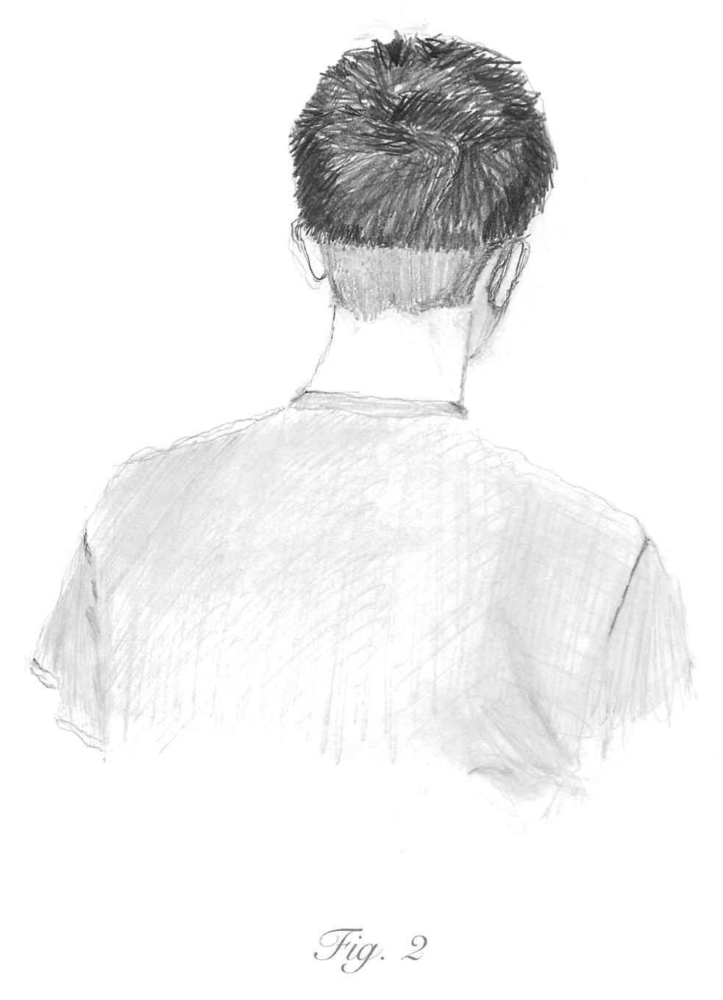
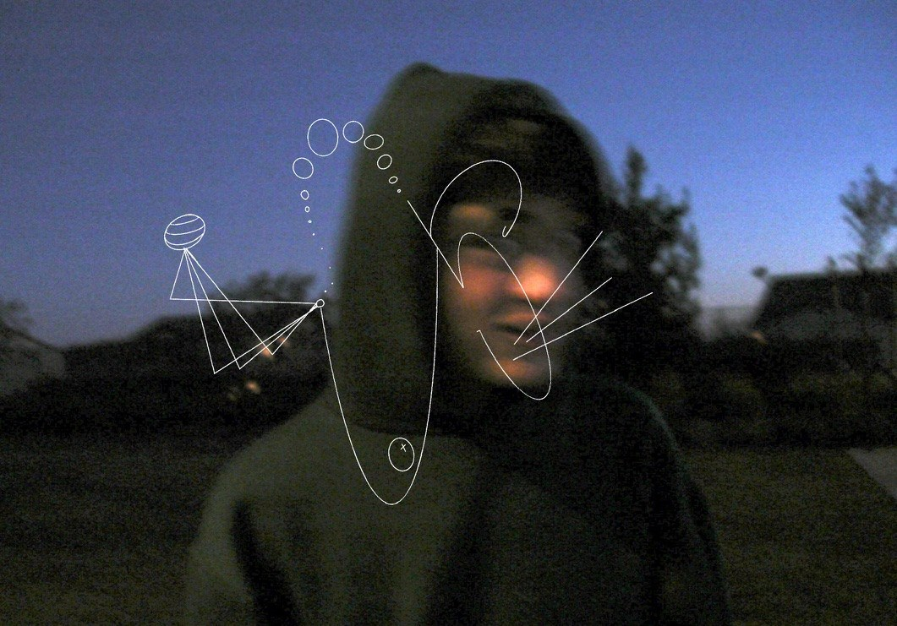
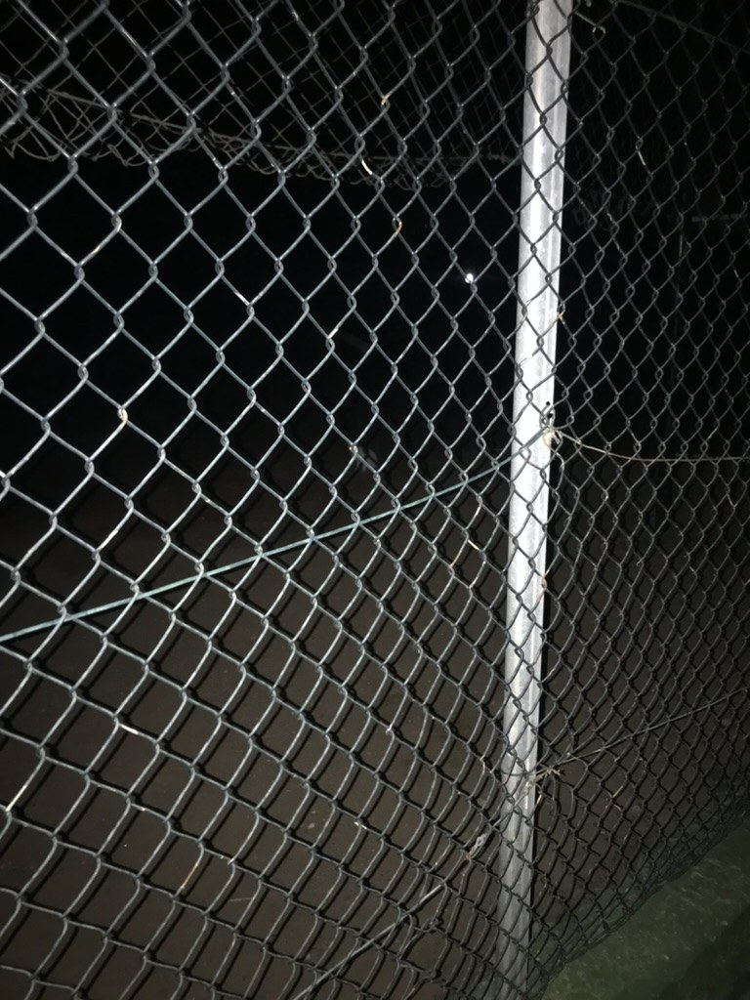
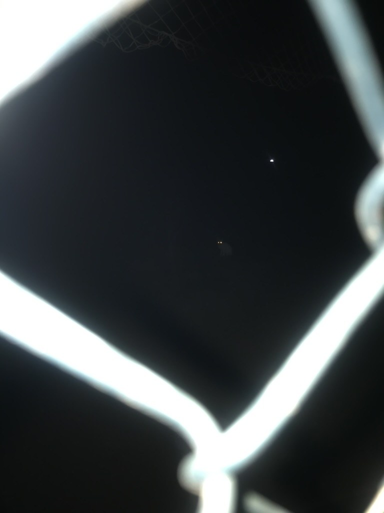
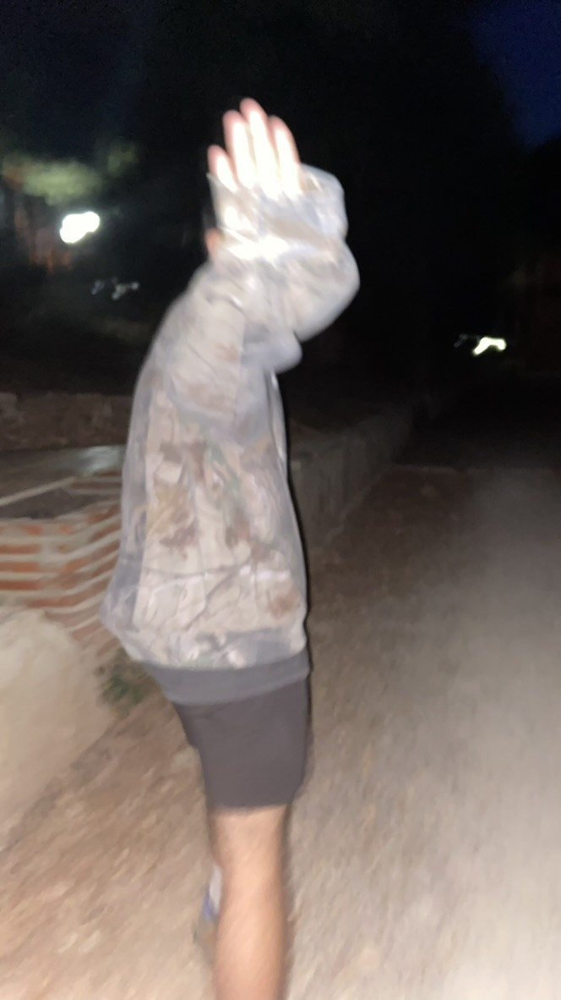
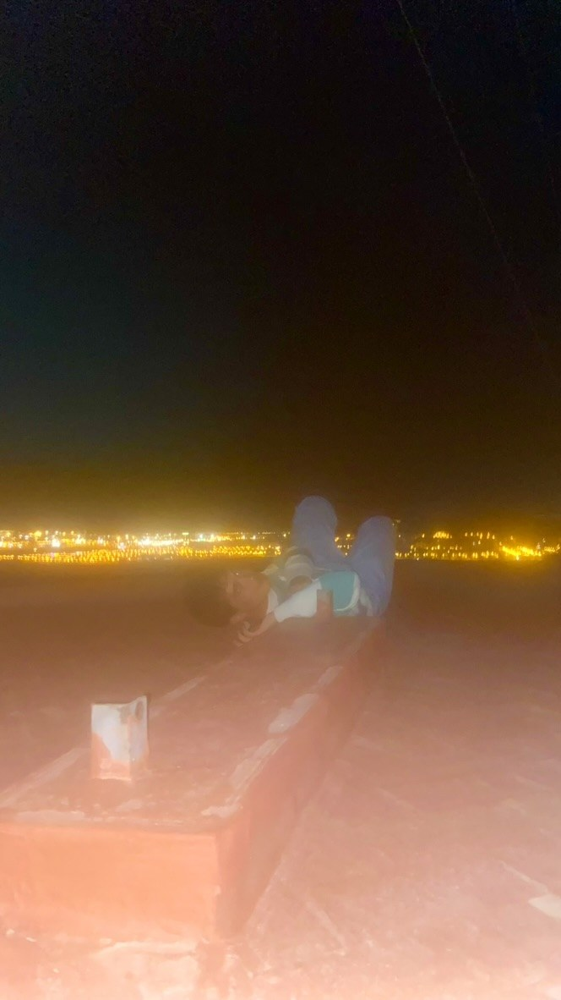

<!doctype html>
<html lang="en">
<head>
<meta charset="utf-8">
<title>first night of my life — Alder Cote</title>
<meta name="viewport" content="width=device-width, initial-scale=1">
</head>
<body>
<style>:root{--page:#111111;color-scheme:dark}html,body{background:var(--page)}body{margin:0;overflow-x:hidden}#app{width:max-content;margin:0 auto}a{cursor:pointer}
body{margin:0}
.sp{font-family:'Times New Roman', Times, serif;color:#FCFBF7}
.sp a{color:#FCFBF7}
.lab{margin:0;font-family:Arial, Helvetica, sans-serif;font-size:10px;letter-spacing:.1em;text-transform:uppercase}
.chip{display:inline-block;background:#111111;color:#FCFBF7;font-family:Arial, Helvetica, sans-serif;font-size:10px;letter-spacing:.1em;text-transform:uppercase;padding:4px 7px;white-space:nowrap}
.ov{display:inline-flex;align-items:center;justify-content:center;border:1.5px solid #111111;border-radius:50%;font-family:Arial, Helvetica, sans-serif;font-size:13px;text-decoration:none;box-sizing:border-box}
.cl{cursor:url(./clef-cursor.png) 12 44, pointer}
.scr{scrollbar-width:none}.scr::-webkit-scrollbar{display:none}
.tile{position:absolute;overflow:hidden}
.tile video,.tile img{width:100%;height:100%;object-fit:cover;display:block}
.fr{position:absolute;top:0;overflow:hidden;box-shadow:inset -1px 0 0 #111111}
.fr img{width:100%;height:100%;object-fit:cover;display:block;transition:transform .6s cubic-bezier(.32,.72,0,1)}
.fr:hover img{transform:scale(1.06)}

.sp .ly,.book .ly{position:absolute;margin:0;font-family:'Courier New',Courier,monospace;font-size:14px;line-height:1.55;white-space:pre}
.sp .vt,.book .vt{position:absolute;margin:0;writing-mode:vertical-rl;font-family:'Courier New',Courier,monospace;font-size:12px;letter-spacing:.08em}
.book{perspective:3200px}
.book .pg{position:absolute;top:0;width:680px;height:1100px;background:#FFFFFF;box-shadow:0 0 0 1px #DDDAD2}
.book .leaf{position:absolute;left:680px;top:0;width:680px;height:1100px;transform-origin:left center;transform-style:preserve-3d;transition:transform .9s steps(9);z-index:5;cursor:pointer}
.book .face{position:absolute;inset:0;background:#FFFFFF;box-shadow:0 0 0 1px #DDDAD2;backface-visibility:hidden;-webkit-backface-visibility:hidden}
.book .turn{position:absolute;bottom:-40px;font-family:'Courier New',Courier,monospace;font-size:13px;background:none;border:0;color:#0000EE;text-decoration:underline;cursor:pointer;padding:0}
.book .pg,.book .face{overflow:hidden}
@keyframes jit{0%{transform:translate(0,0)}25%{transform:translate(1px,-1px)}50%{transform:translate(-1px,1px)}75%{transform:translate(1px,0)}}
.book .jit{display:inline-block;animation:jit .5s step-end infinite}
.sp .book{color:#111111}
.sp .book a{color:#0000EE}
.sp .book .turn{color:#FCFBF7}
@keyframes hop{0%{transform:translateY(0) rotate(-6deg)}50%{transform:translateY(-6px) rotate(6deg)}}html,body{height:100%;overflow:hidden}#app{margin:0}.sp{height:var(--acvh,900px)!important}</style>
<script src="./site.js"></script>
<div id="app"></div>
<script type="text/x-template" id="tpl0"><div class="sp" style="width: 1440px; height: 900px; position: relative; overflow: hidden; background: #111111"><div style="position: absolute; left: {{bx}}px; top: {{by}}px; width: {{bw}}px; height: {{bh}}px; border: {{bb}}px solid #1C1B1A; box-sizing: border-box; background: #111111; overflow: hidden; z-index: 0"><video ref="{{main}}" src="./fn-film2.mp4" poster="./fn-film2.jpg" autoplay muted loop playsinline disablepictureinpicture style="width: 100%; height: 100%; object-fit: cover; display: block; pointer-events: none"></video></div><div style="position: absolute; inset: 0; background: #111111; opacity: {{dim}}; pointer-events: none; z-index: 0"></div><div class="scr" ref="{{scr}}" onScroll="{{scroll}}" style="position: absolute; inset: 0; overflow-y: auto; z-index: 1"><section style="position: relative; height: var(--acvh, 900px)"><p style="position: absolute; left: 0; width: 1440px; text-align: center; bottom: 22px; margin: 0; font-size: 30px; line-height: 1; opacity: {{cue}}; transition: opacity .4s; pointer-events: none">↓</p></section><section style="position: relative; padding: 120px 64px 56px; display: flex; align-items: flex-end; justify-content: space-between; gap: 40px"><h1 style="margin: 0; font-weight: 400; font-size: 72px; line-height: 0.98">first night of my life</h1><div style="display: flex; gap: 8px; flex: none; padding-bottom: 6px"><a href="#" class="ov" style="height: 40px; padding: 0 14px; min-width: 48px; background: #4FB848; color: #111111">spotify</a><a href="#" class="ov" style="height: 40px; padding: 0 14px; min-width: 48px; background: #F2C230; color: #111111">apple music</a><a href="#" class="ov" style="height: 40px; padding: 0 10px; min-width: 48px; background: #E8173A; color: #FFFFFF">ig</a><a href="#" class="ov" style="height: 40px; padding: 0 10px; min-width: 48px; background: #0000EE; color: #FFFFFF">tok</a></div></section><section style="position: relative; height: {{bookH}}px"><div class="book" style="position: absolute; left: 40px; top: 24px; width: 1360px; height: 1100px; transform: scale({{bookS}}); transform-origin: 680px 0">
  <div class="pg" style="left: 0"><p class="vt" style="left: 26px; top: 40px">1.</p><p class="vt" style="left: 26px; top: 330px">1&nbsp;&nbsp;&nbsp;first night of my life</p><p class="vt" style="left: 26px; top: 860px">[ 0:00 ]</p></div>
  <div class="pg" style="left: 680px"><div style="position: absolute; left: 0; top: 80px; width: 680px; height: 274px"><p style="position: absolute; left: 40px; top: 0; margin: 0; font-family: Arial, Helvetica, sans-serif; font-size: 9px; letter-spacing: 0.14em; color: #F2163C">28&nbsp;&nbsp;▸28A</p><p class="ly" style="right: 80.0px; top: 20px; text-align: right; font-size: 14.7px; line-height: 23.1px; ">i would do anything</p><p class="ly" style="right: 96.79999999999995px; top: 43px; text-align: right; font-size: 14.7px; line-height: 23.1px; ">to see you</p><p class="ly" style="right: 113.60000000000002px; top: 66px; text-align: right; font-size: 14.7px; line-height: 23.1px; ">just standing there</p><p class="ly" style="right: 130.39999999999998px; top: 89px; text-align: right; font-size: 14.7px; line-height: 23.1px; ">by the flower shops</p><p class="ly" style="right: 147.20000000000005px; top: 112px; text-align: right; font-size: 14.7px; line-height: 23.1px; ">and book stalls</p><p class="ly" style="right: 164.0px; top: 136px; text-align: right; font-size: 14.7px; line-height: 23.1px; ">hearing church bells in the air</p><p class="ly" style="right: 180.8px; top: 159px; text-align: right; font-size: 14.7px; line-height: 23.1px; ">if you go</p><p class="ly" style="right: 197.60000000000002px; top: 182px; text-align: right; font-size: 14.7px; line-height: 23.1px; ">i'll go too</p><p class="ly" style="right: 214.39999999999998px; top: 205px; text-align: right; font-size: 14.7px; line-height: 23.1px; ">‘cause now every song's about you</p><p class="ly" style="right: 231.20000000000005px; top: 228px; text-align: right; font-size: 14.7px; line-height: 23.1px; ">found your name right next to mine</p><p class="ly" style="right: 248.0px; top: 251px; text-align: right; font-size: 14.7px; line-height: 23.1px; "><span style="background: #FFEE4A; padding: 0 4px">the first night of my life</span></p></div><div style="position: absolute; left: 0; top: 386px; width: 680px; height: 112px"><p style="position: absolute; left: 40px; top: 0; margin: 0; font-family: Arial, Helvetica, sans-serif; font-size: 9px; letter-spacing: 0.14em; color: #F2163C">30&nbsp;&nbsp;▸30A</p><p class="ly" style="left: 70px; top: 20px; text-align: left; font-size: 14.7px; line-height: 23.1px; ">just say that it's alright</p><p class="ly" style="left: 40px; top: 43px; text-align: left; font-size: 14.7px; line-height: 23.1px; letter-spacing: 0.16em;">lying on the rooftop with me all night</p><p class="ly" style="left: 70px; top: 66px; text-align: left; font-size: 14.7px; line-height: 23.1px; ">don't tell me youre leaving</p><p class="ly" style="left: 110px; top: 89px; text-align: left; font-size: 14.7px; line-height: 23.1px; "><span style="display: inline-block; transform: scaleX(-1)">i don't wanna wake up if i'm dreaming</span></p></div><div style="position: absolute; left: 0; top: 530px; width: 680px; height: 136px"><p style="position: absolute; left: 40px; top: 0; margin: 0; font-family: Arial, Helvetica, sans-serif; font-size: 9px; letter-spacing: 0.14em; color: #F2163C">32&nbsp;&nbsp;▸32A</p><p class="ly" style="left: 70px; top: 20px; text-align: left; font-size: 14.7px; line-height: 23.1px; ">just say that it's alright</p><p class="ly" style="left: 40px; top: 43px; text-align: left; font-size: 14.7px; line-height: 23.1px; letter-spacing: 0.16em;">lying on the rooftop with me all night</p><p class="ly" style="left: 70px; top: 66px; text-align: left; font-size: 14.7px; line-height: 23.1px; ">give me all of your love to believe in</p><p class="ly" style="left: 110px; top: 89px; text-align: left; font-size: 14.7px; line-height: 23.1px; ">i don't wanna wake up</p><p class="ly" style="left: 70px; top: 112px; text-align: left; font-size: 14.7px; line-height: 23.1px; ">‘cause it's the first night of my life</p></div><div style="position: absolute; left: 0; top: 696px; width: 680px; height: 274px"><p style="position: absolute; left: 40px; top: 0; margin: 0; font-family: Arial, Helvetica, sans-serif; font-size: 9px; letter-spacing: 0.14em; color: #F2163C">34&nbsp;&nbsp;▸34A</p><p class="ly" style="right: 80.0px; top: 20px; text-align: right; font-size: 14.7px; line-height: 23.1px; ">i would do anything</p><p class="ly" style="right: 96.79999999999995px; top: 43px; text-align: right; font-size: 14.7px; line-height: 23.1px; ">to see you</p><p class="ly" style="right: 113.60000000000002px; top: 66px; text-align: right; font-size: 14.7px; line-height: 23.1px; ">just standing there</p><p class="ly" style="right: 130.39999999999998px; top: 89px; text-align: right; font-size: 14.7px; line-height: 23.1px; ">by the flower shops</p><p class="ly" style="right: 147.20000000000005px; top: 112px; text-align: right; font-size: 14.7px; line-height: 23.1px; ">and book stalls</p><p class="ly" style="right: 164.0px; top: 136px; text-align: right; font-size: 14.7px; line-height: 23.1px; ">hearing church bells in the air</p><p class="ly" style="right: 180.8px; top: 159px; text-align: right; font-size: 14.7px; line-height: 23.1px; ">if you go</p><p class="ly" style="right: 197.60000000000002px; top: 182px; text-align: right; font-size: 14.7px; line-height: 23.1px; ">i'll go too</p><p class="ly" style="right: 214.39999999999998px; top: 205px; text-align: right; font-size: 14.7px; line-height: 23.1px; ">'cause now every song's about you</p><p class="ly" style="right: 231.20000000000005px; top: 228px; text-align: right; font-size: 14.7px; line-height: 23.1px; ">found your name right next to mine</p><p class="ly" style="right: 248.0px; top: 251px; text-align: right; font-size: 14.7px; line-height: 23.1px; "><span style="background: #FFEE4A; padding: 0 4px">the first night of my life</span></p></div><p class="ly" style="right: 30px; bottom: 26px; font-size: 11px">4</p></div>
  <div class="leaf" style="transform: rotateY({{leafDeg}}deg)" onClick="{{flip}}">
    <div class="face" style=""><div style="position: absolute; left: 0; top: 80px; width: 680px; height: 112px"><p style="position: absolute; left: 40px; top: 0; margin: 0; font-family: Arial, Helvetica, sans-serif; font-size: 9px; letter-spacing: 0.14em; color: #F2163C">12&nbsp;&nbsp;▸12A</p><p class="ly" style="left: 70px; top: 20px; text-align: left; font-size: 14.7px; line-height: 23.1px; ">(one last picture,</p><p class="ly" style="left: 150px; top: 43px; text-align: left; font-size: 14.7px; line-height: 23.1px; ">one last picture,</p><p class="ly" style="left: 230px; top: 66px; text-align: left; font-size: 14.7px; line-height: 23.1px; ">una más,</p><p class="ly" style="left: 310px; top: 89px; text-align: left; font-size: 14.7px; line-height: 23.1px; ">una más)</p></div><div style="position: absolute; left: 0; top: 224px; width: 680px; height: 118px"><p style="position: absolute; left: 40px; top: 0; margin: 0; font-family: Arial, Helvetica, sans-serif; font-size: 9px; letter-spacing: 0.14em; color: #F2163C">14&nbsp;&nbsp;▸14A</p><div style="position: absolute; left: 0; top: 20px; width: 680px; height: 92px; transform: rotate(1.3deg)"><p class="ly" style="right: 90.0px; top: 0px; text-align: right; font-size: 14.7px; line-height: 23.1px; ">between the cold nights</p><p class="ly" style="right: 108.89999999999998px; top: 23px; text-align: right; font-size: 14.7px; line-height: 23.1px; ">and the secrets in that couch</p><p class="ly" style="right: 127.79999999999995px; top: 46px; text-align: right; font-size: 14.7px; line-height: 23.1px; ">i know somehow</p><p class="ly" style="right: 146.70000000000005px; top: 69px; text-align: right; font-size: 14.7px; line-height: 23.1px; ">you’re gonna find me in the morning</p></div></div><div style="position: absolute; left: 0; top: 374px; width: 680px; height: 118px"><p style="position: absolute; left: 40px; top: 0; margin: 0; font-family: Arial, Helvetica, sans-serif; font-size: 9px; letter-spacing: 0.14em; color: #F2163C">16&nbsp;&nbsp;▸16A</p><div style="position: absolute; left: 0; top: 20px; width: 680px; height: 92px; transform: rotate(-0.8deg)"><p class="ly" style="right: 120.0px; top: 0px; text-align: right; font-size: 14.7px; line-height: 23.1px; ">the days are shorter</p><p class="ly" style="right: 138.89999999999998px; top: 23px; text-align: right; font-size: 14.7px; line-height: 23.1px; ">and the words inside your mouth</p><p class="ly" style="right: 157.79999999999995px; top: 46px; text-align: right; font-size: 14.7px; line-height: 23.1px; ">are coming out</p><p class="ly" style="right: 176.7px; top: 69px; text-align: right; font-size: 14.7px; line-height: 23.1px; ">you said you'd know it when you know</p></div></div><div style="position: absolute; left: 0; top: 524px; width: 680px; height: 149px"><p style="position: absolute; left: 40px; top: 0; margin: 0; font-family: Arial, Helvetica, sans-serif; font-size: 9px; letter-spacing: 0.14em; color: #F2163C">18&nbsp;&nbsp;▸18A</p><p class="ly" style="left: 90px; top: 20px; text-align: left; font-size: 14.7px; line-height: 23.1px; ">and honestly</p><p class="ly" style="left: 300px; top: 43px; text-align: left; font-size: 14.7px; line-height: 23.1px; ">the shape of your teeth</p><p class="ly" style="left: 150px; top: 66px; text-align: left; font-size: 14.7px; line-height: 23.1px; ">to the way that you eat</p><p class="ly" style="left: 330px; top: 89px; text-align: left; font-size: 14.7px; line-height: 23.1px; ">from the moment i saw you</p><p class="ly" style="left: 567.08px; top: 126px; text-align: left; font-size: 14.7px; line-height: 23.1px; ">i knew</p></div><p class="ly" style="right: 30px; bottom: 26px; font-size: 11px">2</p></div>
    <div class="face" style="transform: rotateY(180deg)"><div style="position: absolute; left: 0; top: 80px; width: 680px; height: 274px"><p style="position: absolute; left: 40px; top: 0; margin: 0; font-family: Arial, Helvetica, sans-serif; font-size: 9px; letter-spacing: 0.14em; color: #F2163C">20&nbsp;&nbsp;▸20A</p><p class="ly" style="right: 80.0px; top: 20px; text-align: right; font-size: 14.7px; line-height: 23.1px; ">i would do anything</p><p class="ly" style="right: 96.79999999999995px; top: 43px; text-align: right; font-size: 14.7px; line-height: 23.1px; ">to see you</p><p class="ly" style="right: 113.60000000000002px; top: 66px; text-align: right; font-size: 14.7px; line-height: 23.1px; ">just standing there</p><p class="ly" style="right: 130.39999999999998px; top: 89px; text-align: right; font-size: 14.7px; line-height: 23.1px; ">by the flower shops</p><p class="ly" style="right: 147.20000000000005px; top: 112px; text-align: right; font-size: 14.7px; line-height: 23.1px; ">and book stalls</p><p class="ly" style="right: 164.0px; top: 136px; text-align: right; font-size: 14.7px; line-height: 23.1px; ">hearing church bells in the air</p><p class="ly" style="right: 180.8px; top: 159px; text-align: right; font-size: 14.7px; line-height: 23.1px; ">if you go</p><p class="ly" style="right: 197.60000000000002px; top: 182px; text-align: right; font-size: 14.7px; line-height: 23.1px; ">i'll go too</p><p class="ly" style="right: 214.39999999999998px; top: 205px; text-align: right; font-size: 14.7px; line-height: 23.1px; ">'cause now every song's about you</p><p class="ly" style="right: 231.20000000000005px; top: 228px; text-align: right; font-size: 14.7px; line-height: 23.1px; ">found your name right next to mine</p><p class="ly" style="right: 248.0px; top: 251px; text-align: right; font-size: 14.7px; line-height: 23.1px; "><span style="background: #FFEE4A; padding: 0 4px">the first night of my life</span></p></div><div style="position: absolute; left: 0; top: 386px; width: 680px; height: 118px"><p style="position: absolute; left: 40px; top: 0; margin: 0; font-family: Arial, Helvetica, sans-serif; font-size: 9px; letter-spacing: 0.14em; color: #F2163C">22&nbsp;&nbsp;▸22A</p><div style="position: absolute; left: 0; top: 20px; width: 680px; height: 92px; transform: rotate(1.3deg)"><p class="ly" style="right: 120.0px; top: 0px; text-align: right; font-size: 14.7px; line-height: 23.1px; ">beneath the street lights</p><p class="ly" style="right: 138.89999999999998px; top: 23px; text-align: right; font-size: 14.7px; line-height: 23.1px; ">and this concrete canopy</p><p class="ly" style="right: 157.79999999999995px; top: 46px; text-align: right; font-size: 14.7px; line-height: 23.1px; ">you said to me</p><p class="ly" style="right: 176.7px; top: 69px; text-align: right; font-size: 14.7px; line-height: 23.1px; ">“i could've stayed right here forever”</p></div></div><div style="position: absolute; left: 0; top: 536px; width: 680px; height: 118px"><p style="position: absolute; left: 40px; top: 0; margin: 0; font-family: Arial, Helvetica, sans-serif; font-size: 9px; letter-spacing: 0.14em; color: #F2163C">24&nbsp;&nbsp;▸24A</p><div style="position: absolute; left: 0; top: 20px; width: 680px; height: 92px; transform: rotate(-0.8deg)"><p class="ly" style="right: 60.0px; top: 0px; text-align: right; font-size: 14.7px; line-height: 23.1px; ">we said goodbye</p><p class="ly" style="right: 78.89999999999998px; top: 23px; text-align: right; font-size: 14.7px; line-height: 23.1px; ">and as i climb inside that train</p><p class="ly" style="right: 97.79999999999995px; top: 46px; text-align: right; font-size: 14.7px; line-height: 23.1px; ">it still remains</p><p class="ly" style="right: 116.70000000000005px; top: 69px; text-align: right; font-size: 14.7px; line-height: 23.1px; ">the thought of you and me together</p></div></div><div style="position: absolute; left: 0; top: 685px; width: 680px; height: 149px"><p style="position: absolute; left: 40px; top: 0; margin: 0; font-family: Arial, Helvetica, sans-serif; font-size: 9px; letter-spacing: 0.14em; color: #F2163C">26&nbsp;&nbsp;▸26A</p><p class="ly" style="left: 90px; top: 20px; text-align: left; font-size: 14.7px; line-height: 23.1px; ">and honestly</p><p class="ly" style="left: 300px; top: 43px; text-align: left; font-size: 14.7px; line-height: 23.1px; ">the shape of your teeth</p><p class="ly" style="left: 150px; top: 66px; text-align: left; font-size: 14.7px; line-height: 23.1px; ">to the way that you eat</p><p class="ly" style="left: 330px; top: 89px; text-align: left; font-size: 14.7px; line-height: 23.1px; ">from the moment i saw you</p><p class="ly" style="left: 567.08px; top: 126px; text-align: left; font-size: 14.7px; line-height: 23.1px; ">i knew</p></div><p class="ly" style="left: 30px; bottom: 26px; font-size: 11px">3</p></div>
  </div>
  <div style="position: absolute; left: 679px; top: 0; width: 2px; height: 1100px; background: rgba(17,17,17,0.12); z-index: 9; pointer-events: none"></div>
  <button class="turn" style="right: 24px" onClick="{{flip}}">{{turnLabel}}</button>
</div></section><section style="position: relative; width: 1440px; height: 287.5px; background: #111111"><div class="tile cl" onMouseEnter="{{cIn0}}" onMouseLeave="{{cOut0}}" style="left: 0.0px; top: 0; width: 383.4px; height: 287.5px; box-shadow: inset -1px 0 0 #111111"><video src="./fn-film3.mp4" poster="./fn-film3.jpg" muted loop playsinline preload="none" disablepictureinpicture ref="{{cR0}}"></video><span class="chip" style="position: absolute; left: 8px; bottom: 8px">.839 · 05:31 ▶</span></div><div class="tile cl" onMouseEnter="{{cIn1}}" onMouseLeave="{{cOut1}}" style="left: 383.4px; top: 0; width: 161.8px; height: 287.5px; box-shadow: inset -1px 0 0 #111111"><video src="./fn-02.mp4" poster="./fn-02.jpg" muted loop playsinline preload="none" disablepictureinpicture ref="{{cR1}}"></video><span class="chip" style="position: absolute; left: 8px; bottom: 8px">.594 · 10:54 ▶</span></div><div class="tile cl" onMouseEnter="{{cIn2}}" onMouseLeave="{{cOut2}}" style="left: 545.1px; top: 0; width: 511.5px; height: 287.5px; box-shadow: inset -1px 0 0 #111111"><video src="./fn-08.mp4" poster="./fn-08.jpg" muted loop playsinline preload="none" disablepictureinpicture ref="{{cR2}}"></video><span class="chip" style="position: absolute; left: 8px; bottom: 8px">.349 · 15:17 ▶</span></div><div class="tile cl" onMouseEnter="{{cIn3}}" onMouseLeave="{{cOut3}}" style="left: 1056.6px; top: 0; width: 383.4px; height: 287.5px; box-shadow: inset -1px 0 0 #111111"><video src="./fn-13.mp4" poster="./fn-13.jpg" muted loop playsinline preload="none" disablepictureinpicture ref="{{cR3}}"></video><span class="chip" style="position: absolute; left: 8px; bottom: 8px">.103 · 20:40 ▶</span></div></section><section style="position: relative; width: 1440px; height: 548.7px; background: #111111; border-top: 4px solid #111111"><div class="tile" style="left: 0.0px; top: 0.0px; width: 393.8px; height: 275.0px"></div><div class="tile" style="left: 397.8px; top: 0.0px; width: 393.8px; height: 275.0px"></div><div class="tile" style="left: 795.5px; top: 0.0px; width: 224.0px; height: 275.0px"></div><div class="tile" style="left: 1023.5px; top: 0.0px; width: 206.3px; height: 275.0px"></div><div class="tile" style="left: 1233.7px; top: 0.0px; width: 206.3px; height: 275.0px"></div><div class="tile" style="left: 0.0px; top: 279.0px; width: 151.5px; height: 269.7px"></div><div class="tile" style="left: 155.5px; top: 279.0px; width: 151.5px; height: 269.7px"></div><div class="tile" style="left: 311.0px; top: 279.0px; width: 202.3px; height: 269.7px"></div><div class="tile" style="left: 517.3px; top: 279.0px; width: 151.7px; height: 269.7px"></div><div class="tile" style="left: 673.1px; top: 279.0px; width: 202.3px; height: 269.7px"></div><div class="tile" style="left: 879.3px; top: 279.0px; width: 151.7px; height: 269.7px"></div><div class="tile" style="left: 1035.0px; top: 279.0px; width: 202.3px; height: 269.7px"></div><div class="tile" style="left: 1241.3px; top: 279.0px; width: 198.7px; height: 269.7px"></div></section><section style="position: relative; height: 120px; background: #FCFBF7; color: #111111; display: flex; align-items: center; justify-content: space-between; padding: 0 40px; box-sizing: border-box"><a href="songs.html" style="color: #0000EE; font-size: 20px">← /songs</a><a href="songs.html" style="color: #0000EE; font-size: 20px">/songs</a><a href="sentimental-stories.html" style="color: #0000EE; font-size: 20px">sentimental stories →</a></section></div><div style="position: absolute; left: 0; top: 0; width: 1440px; height: 86px; background: #111111; opacity: {{topO}}; transition: opacity .3s; pointer-events: none; z-index: 4"></div><div style="position: absolute; left: 40px; top: 30px; display: flex; align-items: baseline; gap: 12px; z-index: 5"><a href="index.html" style="font-size: 24px; text-decoration: none">alder cote</a><a href="songs.html" style="font-family: Arial, Helvetica, sans-serif; font-size: 11px; text-decoration: none">/ songs</a><span style="font-family: Arial, Helvetica, sans-serif; font-size: 11px">/ first-night-of-my-life</span></div><button onClick="{{toggle}}" aria-label="{{soundLab}}" title="{{soundLab}}" style="position: absolute; right: 36px; top: 22px; z-index: 6; background: none; border: 0; padding: 6px; cursor: pointer"><svg width="30" height="40" viewBox="0 0 30 40" style="display: block; overflow: visible; animation: {{noteAnim}}" aria-hidden="true"><ellipse cx="9" cy="32" rx="7.5" ry="5.5" transform="rotate(-22 9 32)" fill="#FCFBF7"/><rect x="15" y="4" width="2" height="28" fill="#FCFBF7"/><path d="M17 4 C 20 10, 27 12, 26 22 C 25 17, 21 15, 17 14 Z" fill="#FCFBF7"/><line x1="2" y1="40" x2="29" y2="2" stroke="#FCFBF7" stroke-width="1.6" style="display: {{strike}}"/></svg></button></div></script>
<script>

class C0 extends DCLogic {
  constructor(props) { super(props); this.state = { sound: false, y: 0, flipped: false }; }
  renderVals() {
    const on = this.state.sound, f = this.state.flipped, o = {};
    o.main = (el) => { if (el) this.v = el; };
    // the frame: resting size from the window's height, then grown by scrolling until it is the whole background
    const A = 1.33333, RH = this.state.rh || 900, y = this.state.y;
    const mh = RH - 150, rw = Math.min(1260, mh * A), rhh = rw / A, rx = (1440 - rw) / 2, ry = 76 + (mh - rhh) / 2;
    const p = Math.max(0, Math.min(1, y / (RH * 0.5))), e = p * p * (3 - 2 * p);
    o.bx = (rx * (1 - e)).toFixed(1); o.by = (ry * (1 - e)).toFixed(1);
    o.bw = (rw + (1440 - rw) * e).toFixed(1); o.bh = (rhh + (RH - rhh) * e).toFixed(1);
    o.bb = (2 * (1 - e)).toFixed(2); o.dim = (0.5 * e).toFixed(3);
    o.scr = (el) => { if (el && el.clientHeight && Math.abs(el.clientHeight - RH) > 1) setTimeout(() => this.setState({ rh: el.clientHeight }), 0); };
    o.scroll = (ev) => { const t = ev.target.scrollTop; if (Math.abs(t - this.state.y) > 0.5) this.setState({ y: t }); };
    o.cue = y > 40 ? 0 : 1; o.topO = y > RH * 0.6 ? 1 : 0;
    // the book fits the window: its two pages and the turn link, under the top band
    const bS = Math.min(0.72, (RH - 86 - 120) / 1100); o.bookS = bS.toFixed(4); o.bookH = Math.round(1100 * bS + 24 + 72);
    o.leafDeg = f ? -180 : 0; o.turnLabel = f ? '‹ turn back' : 'turn the page ›';
    o.flip = () => this.setState({ flipped: !f });
    o.stop = (e) => { if (e && e.stopPropagation) e.stopPropagation(); };
    o.toggle = () => { const v = this.v; if (!v) return; v.muted = on; if (!on) { const p = v.play(); if (p && p.catch) p.catch(() => {}); } this.setState({ sound: !on }); };
    o.soundLab = on ? 'sound off' : 'sound on'; o.noteAnim = on ? 'hop .5s step-end infinite' : 'none'; o.strike = on ? 'none' : 'inline';
    [0, 1, 2, 3].forEach((i) => {
      o['cR' + i] = (el) => { this.c = this.c || {}; if (el) this.c[i] = el; };
      o['cIn' + i] = () => { const c = (this.c || {})[i]; if (!c) return; if (this.v && this.state.sound) this.v.muted = true;
        c.muted = false; const p = c.play(); if (p && p.catch) p.catch(() => { c.muted = true; c.play(); }); };
      o['cOut' + i] = () => { const c = (this.c || {})[i]; if (c) { c.pause(); c.muted = true; } if (this.v && this.state.sound) this.v.muted = false; };
    });
    return o;
  }
}

</script>
<script>dcBoot(C0, "tpl0", 1440, "fill");</script>
</body>
</html>
